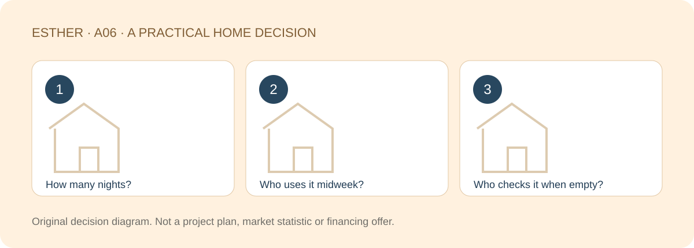

A HOME THAT FITS YOUR LIFE
Living in JB Full-Time vs Weekend Living: How to Choose Your Home
Sources checked：2026-10-26 · By Esther, Real Estate Negotiator

Direct answer
A full-time home needs to work on ordinary weekdays. A weekend home needs to justify its lower use and have a practical care plan when empty. Start with who lives there, how often and who looks after it; checkpoint distance alone cannot answer those questions.
Browse article sections
Write an ordinary month, not an ideal holiday
Mark nights in JB, meals at home, work, family visits and likely changes. If you return only at weekends but your partner and children live there daily, it is their full-time home. Their weekday routine deserves proper weight.
Also record absences. During a busy period, who receives notices, responds to a leak or arranges a necessary check? “We will come back more often” is an intention, not a tested use pattern.

The same home can face different tests
| Question | Daily use | Mainly weekend use |
|---|---|---|
| Space | Storage, work and rest happening together | Easy arrival and manageable upkeep |
| Services | Household weekday needs | Services and activities actually used on visits |
| Management | Daily responses and rules | Contacts and access during absences |
| Family time | A sustainable ordinary week | A journey you want to repeat |
Neither lifestyle is automatically better. The purchase should support a rhythm you can maintain, not make you feel obliged to return every weekend simply to justify owning it. Compare what each household member actually gains.
Lower occupancy does not remove fixed expenses
Loans, applicable shared charges and funds, taxes, insurance and some service costs do not necessarily fall with the number of nights stayed. Separate fixed expenses, use-related costs and occasional repairs before deciding what feels comfortable.
Dividing your verified fixed monthly spending by actual occupied nights can highlight under-use. It is not a hotel rate, rental forecast or investment return. Family value also includes things that cannot sensibly be reduced to a nightly figure.

Make the empty-home plan before buying
- Agree who holds keys, may enter and receives notices.
- Arrange suitable checks for leaks, odours and equipment without unsafe do-it-yourself testing.
- Confirm management and insurance requirements relevant to longer absences.
- If occasional letting is considered, check applicable law, building rules and conditions first; do not assume short stays are permitted.
A managed building does not mean someone checks the inside of your unit. A landed home also needs more than a locked door. Match home type to the care arrangement you can realistically maintain.
Count the whole household’s use
If you return eight nights a month but your family stays all month, do not assess the home only through your eight nights. If everyone visits occasionally, check that they want to repeat the routine. These are illustrative patterns, not survey findings or proof that either lifestyle offers a better financial outcome.
Test the routine before choosing the layout
Use a currently workable travel and accommodation arrangement to try an ordinary routine, then record whether you would repeat it. This is not another ranking of CIQ distances and promises no fixed border-crossing time. Consult official ICA channels for checkpoint information and allow for changing conditions.
This discussion is for Malaysian buyers, including Malaysians working in Singapore. Citizenship and employment location are separate; Singapore citizens or mixed-nationality purchasers need separate eligibility advice before buying in Johor.
Explore a project only if the basic fit matches
If Kebun Teh and condo living already suit your search, the existing The Celestz page is one place to investigate actual plans and specifications. This does not confirm a price match, 2+1 availability, stock, access suitability or management performance. Check the exact unit and documents first.
Investigate The Celestz specifications ↗
Frequently asked questions
Does weekend use mean a small unit is enough?
Not necessarily. Consider who comes with you, storage, activities and overnight family needs.
Does management take care of an empty unit?
Do not assume so. Common-property management and checks inside your home are separate arrangements.
Can occasional rent offset the costs?
Do not rely on it. Legal conditions, building rules and actual demand need checking; letting is not guaranteed.
Is the nearest home to CIQ always the best?
No. Compare real household use and upkeep first, then assess the actual route and transport separately.
Compare JB homes around the way you actually live
Share the part of your home search you want to clarify, your budget range and a suitable time to chat. A viewing or appointment is confirmed only after arrangements are agreed.
Discuss my home search with EstherThe editable message identifies this guide. Nothing is sent until you choose to send it. No identity or financial documents are needed in an initial chat.Sources and scope
Checked：2026-10-26。Practical comparisons and checklists are original editorial guidance, not market statistics, a professional inspection or personalised legal, tax or financing advice. Project details and transaction-specific requirements need separate verification. Historical source dates do not establish a new policy announcement. No loan approval, rental, appreciation, search ranking or AI citation is guaranteed.